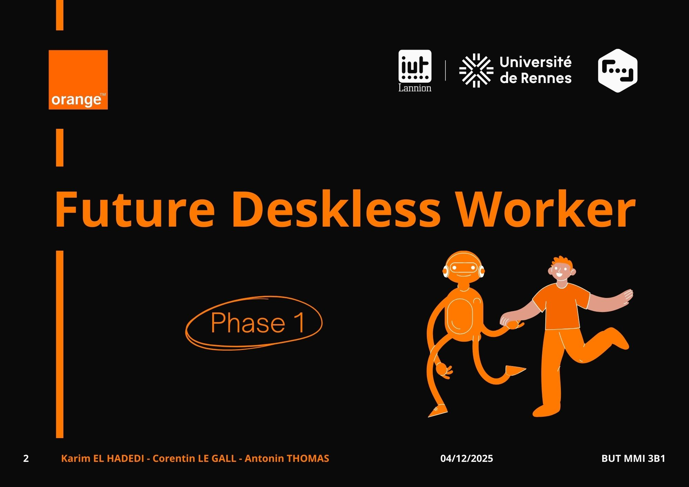

Workshop « Future Deskless Worker »
ORANGE INNOVATION – Projet universitaire

Objectifs : explorer comment l’IA peut assister les infirmières dans leurs tâches quotidiennes pour améliorer la qualité des soins et réduire la charge de travail.
Rôle : chef de projet.
Missions : analyse du métier d’infirmière et des pain points, définition de cas d’usage IA, conception d’outils de recueil de besoins (1 interview et 1 questionnaire), pilotage du projet et suivi des livrables.
Outils :